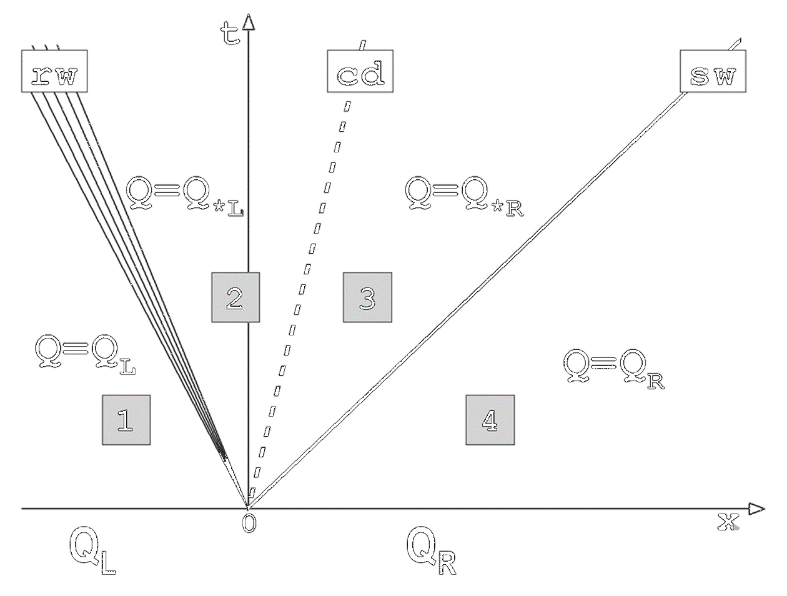
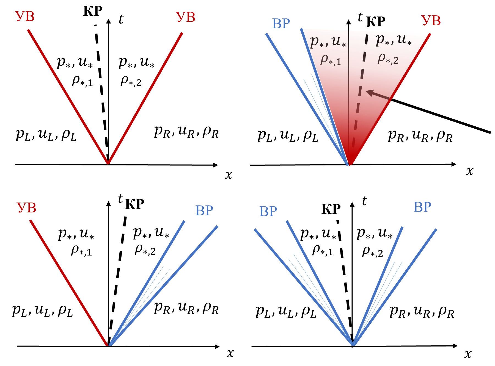
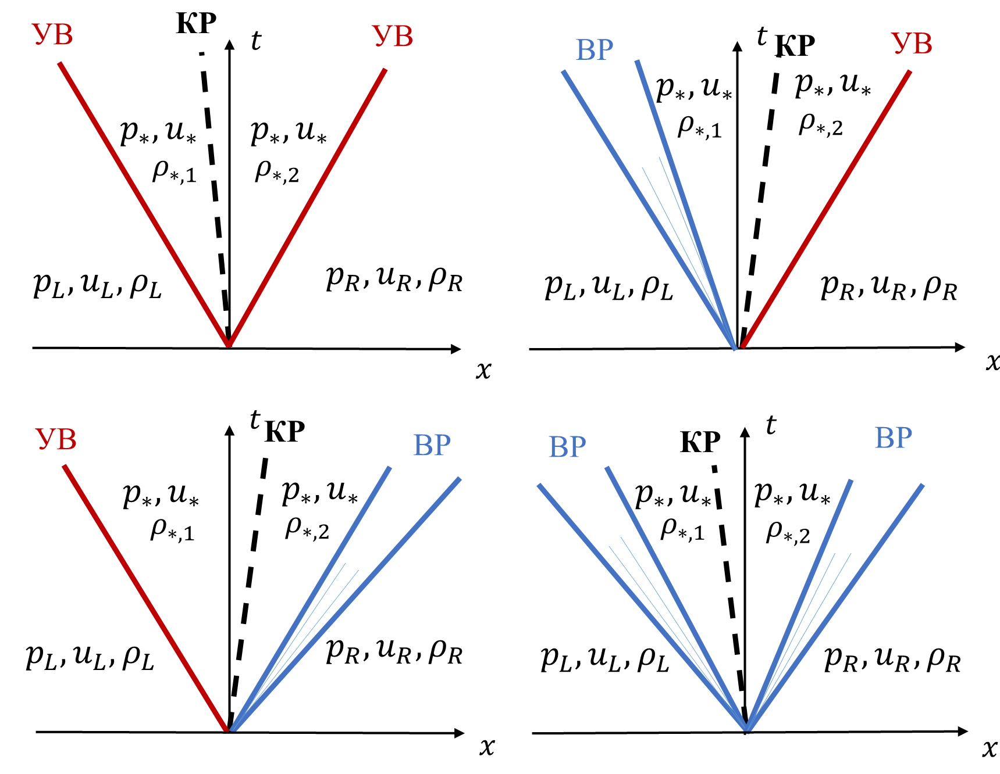
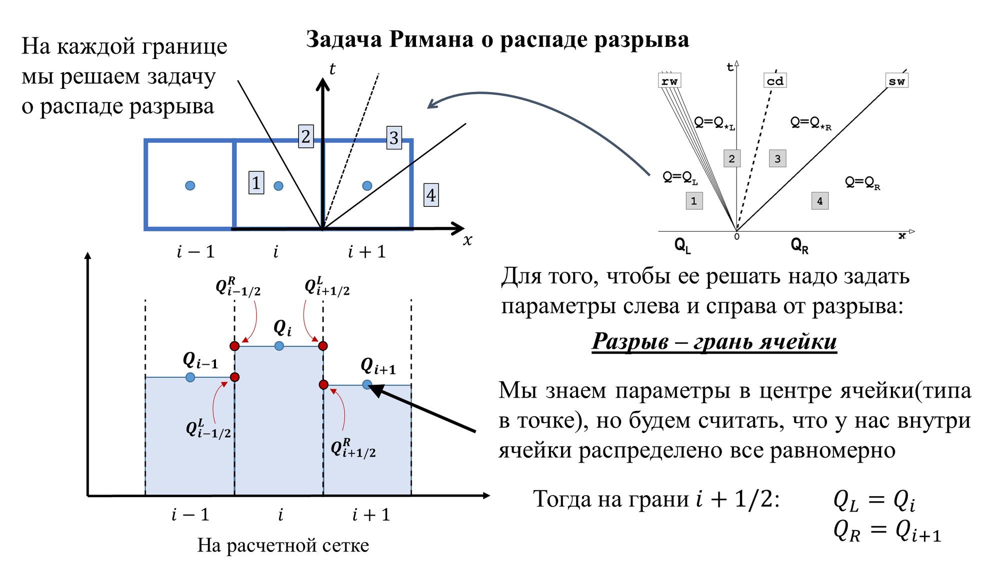
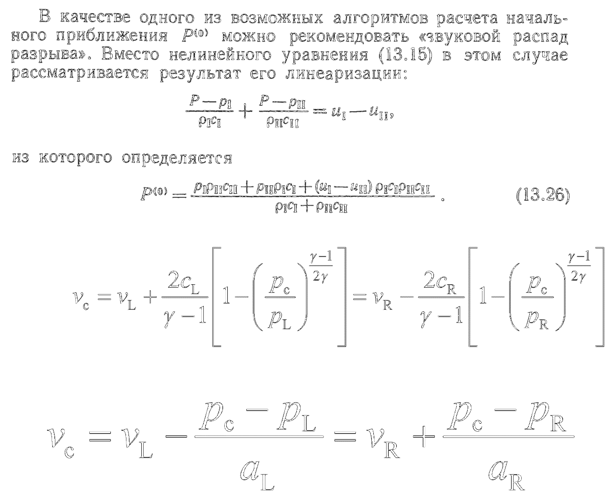
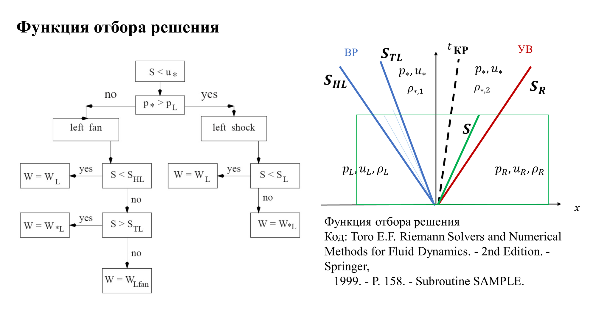
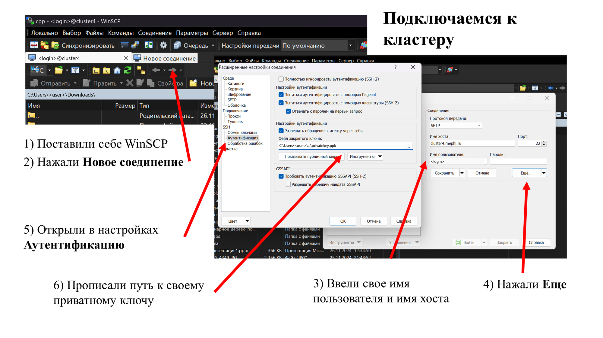
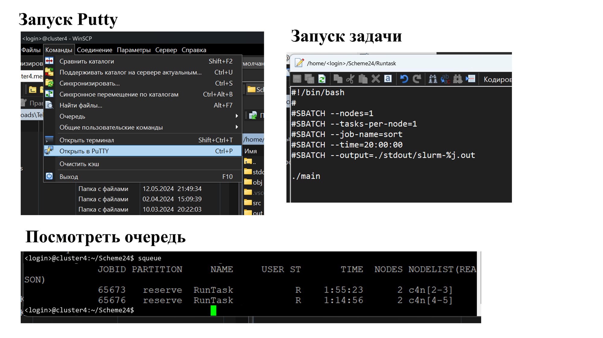
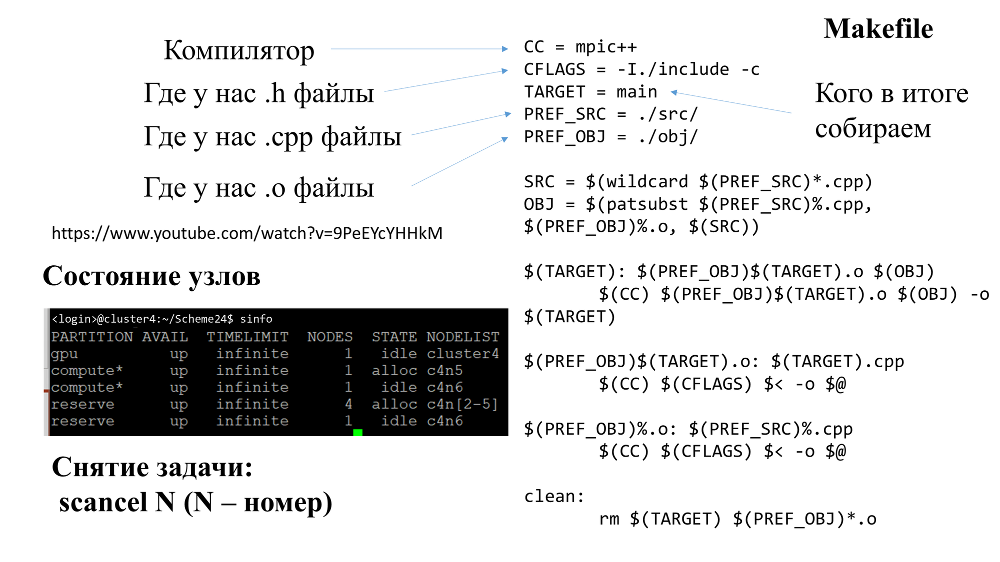
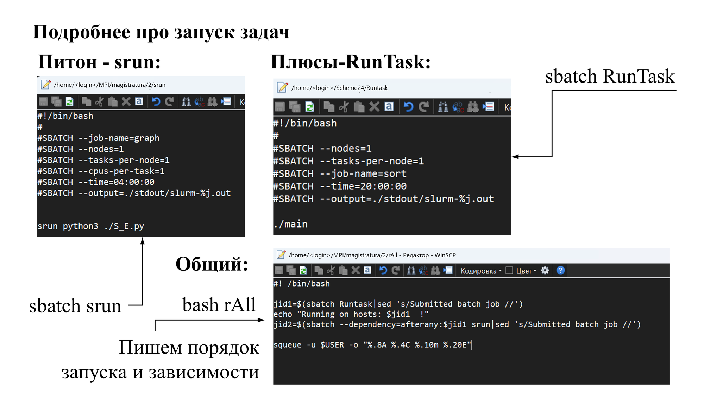

Задача Римана о распаде разрыва
Задача Коши с начальным разрывом в точке \(x=0\):

Во входных данных задачи о распаде произвольного разрыва отсутствуют параметры, имеющие размерность длины и времени. Поэтому искомое решение автомодельное.

В каждую сторону от разрыва может распространяться не более одной волны, ударной или разрежения.
Нас интересуют параметры \(p_*,u_*\) — это параметры тут.
На контактном разрыве непрерывны \(p_*,u_*\).
При этом мы знаем соотношения для \(p_*,u_*\) и \(p_L,u_L\), \(p_*,u_*\) и \(p_R,u_R\).

Соотношения РГ
Левая УВ:
Правая УВ:
Соотношения на ВР
Левая ВР:
Правая ВР:
| \(p_L=1.0\) \(u_L=0.0\) \(\rho_L=1.0\) | \(p_R=0.1\) \(u_R=0.0\) \(\rho_R=0.125\) |
УВ слева:
ВР слева:
УВ справа:
ВР справа:

Ударная волна\(p_*\gt p\)
Волна разрежения\(p_*\lt p\)
1) Определяем, какая у нас волна
2) Выполняем итерационную процедуру поиска решения — \(p_*\)
1. Определяем параметры слева и справа на грани ячейки
2. Метод Годунова (принимает \(Q_L\) и \(Q_R\), а возвращает поток Годунова):
2.1 Решатель Римана (принимает \(Q_L\) и \(Q_R\), а возвращает параметры на грани ячейки):
2.1.1 Итерационная процедура расчёта давления и скорости на контактном разрыве:
2.1.2 Отбор решения — ищем значение на грани ячейки
2.2 Поток Годунова (принимает параметры на грани ячейки, возвращает потоки):
Условие на шаг по времени: возникающие возмущения внутри ячейки не должны успеть выйти за её пределы
Так как условие получено для линейных задач, то есть коэффициент запаса
Определение начального приближения для расчёта давления на контактном разрыве
Код: Toro E.F. Riemann Solvers and Numerical Methods for Fluid Dynamics. — 2nd Edition. — Springer, 1999. — P. 157. — Subroutine GUESSP.
Возвращает искомое начальное приближение
1) Начальное приближение из линеаризованной задачи
Годунов С.К. и др. Численное решение многомерных задач газовой динамики. — М.: Наука, 1976. — С. 113.
2) Начальное приближение по двум волнам разрежения
Toro E.F. Riemann Solvers and Numerical Methods for Fluid Dynamics. — 2nd Edition. — Springer, 1999. — P. 302. — Formula (9.32)
3) Начальное приближение по двум ударным волнам
Toro E.F. Riemann Solvers and Numerical Methods for Fluid Dynamics. — 2nd Edition. — Springer, 1999. — P. 128. — Formula (4.48)





